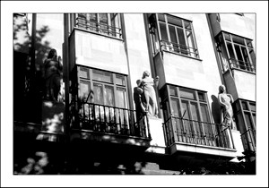

Las tres hermanas
La plaza de Santa Eularia
En la plaza de Santa Eulária nos encontramos con la iglesia del mismo nombre. Antiguamente en esta plaza se encontraba uno de los mercados de la ciudad, parte del cementerio parroquial de la iglesia y lugar de ejecución de bandoleros y maleantes.
En la plaza Santa Eulária existen tres interesantes esculturas, creadas por Antonio Font, Aurora, Meridies y Vesper.
Llevan seis décadas vigilantes en la plaza de Santa Eulária. Simbolizan el transcurso del día, el comienzo (Aurora), el mediodía (Meridies), y la llegada de la noche (Vesper).